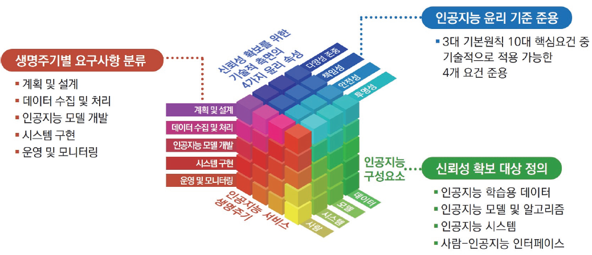
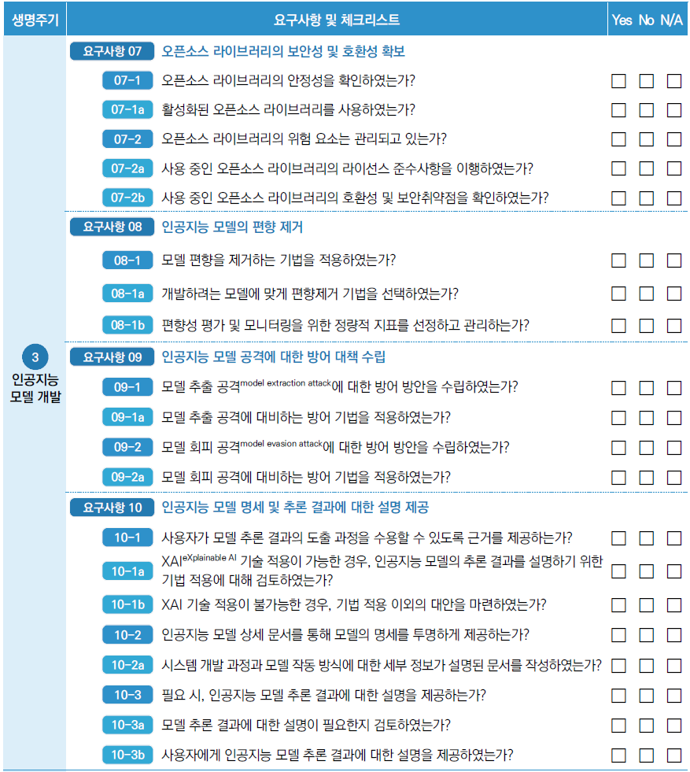

4 신뢰할 수 있는/책임있는 인공지능 윤리를 위한 가이드라인
박대민 (선문대학교 미디어커뮤니케이션학부)
“안중근 의사가 어떤 사람이냐 묻는 질문에 ’테러리스트’라고 답하는 AI가 세계에서 보편적으로 사용되면 한국이 입을 손해가 얼마나 클지 상상조차 하기 힘들다. “
- 최예진 미국 워싱턴대학교 교수의 조선일보 인터뷰 (오로라, 2024.1.2.)
4.1 인공지능 신뢰성 문제
인공지능(artificial intelligence, AI) 기술이 빠르게 발전하면서 사회 전반에 AI 전환(AI transformation, AIX)에 대한 기대가 커지고 있다. 그러나 다른 한편으로는 AI가 초래할지도 모를 부정적 영향에 대한 우려도 적지 않다.
AI는 알고리듬에 의한 모델링 편향(modeling bias) 문제, 학습데이터에 의한 교육 편향(bias in training) 문제, AI를 악용하는 사람이나 조직의 문제 등으로 공정성 문제가 발생할 수 있다(손영화, 2023). 그 결과 AI가 편견을 학습해 범죄 예측이나 채용, 복지 제공 등에서 성이나 인종, 국적 차별을 하는 사례가 보고됐다. 학습데이터에 포함된 개인정보를 유출한다거나, 자살이나 위험한 놀이를 권유하거나, 체스 게임 중에 인간을 위협하고 실제 상해를 입히는 사례도 있었다 (한국정보통신기술협회, 2023; 손영화, 2023). 챗GPT의 환각(hallucination), 생성 AI를 활용한 가짜 뉴스, AI 생성물을 논문이나 시험, 과제물, 창작물 등에 비공개로 사용하는 것 등도 AI의 신뢰도를 훼손한다. 전쟁에 사용되는 킬러 로봇(killer robots)에 대한 우려도 커지고 있다(Beutel, Geerits, & Kielstein, 2023; Krishnan, 2016).
게다가 이러한 문제를 개선하고자 하더라도 AI의 설명가능성 문제가 제기된다. 많게는 수조 개의 매개변수를 학습하는 딥러닝 방식이 일반화되면서 AI가 왜 그런 결과를 내놓았는지를 이해하기 어렵기 때문이다(고학수 등, 2021). 때문에 2024년 1월 현재, 딥러닝의 대부인 요슈아 벤지오(Yoshua Bengio) 캐나다 몬트리올대학교 교수와 미래학자인 유발 하라리, 일론 머스크 테슬라 사장, 에마드 모스타크 스테빌리티AI 사장 등 3만3000명이 넘는 인물들이 GPT-4를 넘어서는 AI 개발을 6개월 간 중단하자는 서한에 서명하기도 했다(Futrue of life, 2023.3). AI의 성능 개선 속도가 너무 빠르기 때문에 예기치 못할 AI의 해악에 대응할 시간을 벌자는 취지다.
AI가 야기할지도 모르는 정치적, 경제적, 사회적, 문화적, 국제적 측면의 전방위적 문제에 대한 논의는 AI 윤리, AI 공정성(fairness), 설명가능한 인공지능(eXplainable AI, XAI), 책임 있는 AI(responsible AI) 등의 논의를 거쳐 일단 신뢰할 수 있는 인공지능(trustworthy AI, TAI)이라는 개념 아래 종합되는 추세다.
이 장에서는 TAI의 개념과 전개, 그리고 저널리즘 분야에 적용 가능성을 살펴보도록 한다. 내용을 간략하게 살펴보면 다음과 같다. 우선 2절에서는 학제적인 신뢰 개념을 검토하고 이를 바탕으로 TAI를 정의한다. 우선 신뢰의 하위 개념으로는 신뢰성과 신뢰도를 살펴본다. 다음으로 신뢰의 두 유형으로 인간 신뢰와 기계 신뢰를 논의한다. 이어 TAI의 개념을 신뢰성과 신뢰도, 인간 신뢰와 기계 신뢰 측면에서 개념화한다. 3절에서는 TAI의 논의가 어떻게 전개됐는지 유럽연합 집행위원회(European Commission, EC), 경제협력개발기구 (Organisation for Economic Co-operation and Development, OECD), 그리고 국내에서 진행된 TAI 논의를 중심으로 살펴본다. TAI의 논의는 윤리적인 측면에서 기술적인 측면으로 구체화됐다. 4절에서는 TAI의 구체적인 영역(domain)으로서 저널리즘 분야를 놓고, TAI가 저널리즘 분야의 AI, 즉 저널리즘 AI에 어떻게 적용될 수 있는지 살펴본다. 저널리즘 AI의 신뢰성은 AI로서의 신뢰성 외에도 언론인과 언론사의 신뢰성을 제고함으로써 달성된다. 이를 위해서는 언론인이 저널리즘 AI의 기술적 루프(loop) 속에 참여해야 한다.
4.2 신뢰할 수 있는 인공지능의 개념
4.2.1 신뢰의 정의
TAI를 논의하기에 앞서 신뢰의 개념을 살펴보자. 우선 신뢰는 신뢰자(trustor)가 신뢰 대상(trustee)을 믿는 것이다. 그러나 신뢰는 단순히 믿는 것 이상을 의미한다. 신뢰에 대한 심리학, 사회학, 경제학 분야의 연구들을 검토한 바에 따르면, 신뢰는 타인의 의도(intention)나 행동(behavior)에 대한 긍정적인 기대(positive expectation)에 근거하여 취약성(vulnerability)을 수용하려는 의지에 따른 심리적 상태로 정의할 수 있다(Rousseau et al, 1998).
무엇보다 신뢰는 위험(risk)이 존재한다. 이러한 면에서 신뢰는 확신(confidence)과 다르다. 확신에는 위험 감수가 없다. 그러나 신뢰에는 위험 감수가 존재한다(Luhmann, 2000). 위험은 신뢰 대상의 의도와 미래의 행동이 불확실성(uncertainty)을 갖기 때문에 발생한다. 즉 신뢰 대상은 반사회적인 의도와 행동을 할 수 있다. 이러한 위험이 있는 상태에서 신뢰자는 신뢰 대상에 대한 긍정적 기대를 바탕으로 자신의 취약성을 받아들일 때 신뢰자는 신뢰 대상을 신뢰한다고 할 수 있다. 위험은 신뢰의 기회를 마련한다. 신뢰는 위험 감수에 도움을 준다. 위험 감수는 신뢰를 강화한다(Coleman, 1990).
신뢰는 상호적이다. 신뢰를 위해서는 신뢰자가 신뢰 대상을 신뢰할 뿐만 아니라, 신뢰 대상이 신뢰자를 신뢰해야 한다. 즉 신뢰 관계에서 신뢰자는 신뢰 대상으로, 신뢰 대상은 신뢰자로 바뀔 수 있다.
신뢰의 기능으로는 거래 비용(transaction cost)을 감소시키고 조직 통합을 강화한다는 점을 들 수 있다(Gambetta, 1988; Meyerson et al., 1996; Shapiro et al., 1992). 사실 완전한 확신을 얻기란 쉽지 않다. 때문에 신뢰는 불확실성 상황에서 협력의 지름길 역할을 한다.
신뢰는 제도적으로 공급되어야 한다. 신뢰는 오랜 시간 동안 형성되고, 안정과, 해체, 그리고 재부상하는 과정을 거친다(Fukuyama, 1995; Miles et al., 1995). 신뢰는 훼손되기 쉬우며 때문에 과소 공급되는 공공재와 같다. 신뢰는 법적 통제에 의존하지는 않는다. 신뢰를 지키지 않았을 때 처벌하는 식의 법적 통제는 오히려 신뢰를 훼손시킬 수도 있다(Sitkin & Bies, 1993). 그러나 신뢰를 뒷받침할만한 제도적 장치는 신뢰 증진에 도움이 된다(Nooteboom, Berger, & Noorderhaven, 1997).
4.2.2 신뢰성과 신뢰도
신뢰 아래의 긍정적 기대는 다양하다. 우선 상대가 자신에게 이로운 행동을 할 것이라는 호의(benevolence)에 대한 기대가 있다. 신뢰 대상이 사회적, 도덕적 원칙을 지킬 것으로 믿는 진실성(integrity)에 대한 기대도 있다. 신뢰 대상이 기대하는 바를 실행할 수 있으리라는 능력(competence)에 대한 기대도 포함된다(김길수, 2020; Mayer et al., 1995). 호의를 갖고 있지만 진실성이 없다면 그것은 정파성을 띄게 된다. 상대방이 호의와 진실성을 갖고 있다고 하더라도 이를 실현할 능력이 없다면 신뢰할만한 대상이 되지 않는다.
신뢰와 관련된 개념으로 신뢰도(credibility)와 신뢰성(trustworthiness)이라는 용어가 사용된다. 이러한 용어들이 혼용되는 경향이 있지만, 대체로 신뢰도는 신뢰자의 속성, 신뢰성은 신뢰 대상의 속성을 일컫는 말로 구분할 필요가 있다. 신뢰도는 신뢰자가 신뢰 대상을 얼마나 신뢰하는지를 나타내는 심리적 수준을 의미한다. 이는 신뢰의 개인심리적 측면으로 볼 수 있다. 신뢰성은 신뢰 대상의 의도와 행동, 그리고 능력과 관련된다. 즉 신뢰성은 신뢰의 사회제도적 측면에 더 초점을 두고 있다.
예컨대 언론 신뢰는 “언론사가 만족스러운 방식으로 기능을 수행할 것이라는 기대를 바탕으로 뉴스 콘텐츠를 기꺼이 받아들이려는 수용자의 의향”이라고 정의할 수 있다(Hanitzsch et al., 2018). 여기서 수용자의 의향은 언론 신뢰의 개인심리적 측면, 즉 신뢰자의 개인심리적 신뢰도를 의미한다. 언론사의 기능 수행은 언론 신뢰의 사회제도적 측면, 즉 신뢰 대상으로서 언론사라는 제도의 신뢰성을 뜻한다. 신뢰도는 수용자의 인지적 반응과 정서적 반응을 포괄한다. 각각에 대응하여 신뢰성은 사실성과 공정성을 모두 충족해야 한다. 즉 신뢰성 문제는 언뜻 보면 기능에 치우친 것처럼 보일 수 있으나 실은 가치 문제를 포함한다.
4.2.3 인간 신뢰와 기계 신뢰
전통적으로 신뢰는 개인 수준이든 집단 수준이든 인간에 대한 신뢰(trust in people)의 측면에서 다뤄졌다. 그러나 현대 사회에서는 기술을 신뢰 대상으로 하는 기술 신뢰(trust in technology)의 중요성이 커지고 있다. 특히 디지털 시대에 기술이 인간의 역할을 점점 더 많이 대체하면서 기술 신뢰에 대한 연구가 늘고 있다(김길수, 2020).
기술 신뢰는 인간 신뢰와 다른 점이 있다. 우선 기술 자체는 의도를 갖고 있지 않다. 때문에 기술은 신뢰 대상이 아니라든가, 기술 신뢰를 다룰 때 일종의 능력인 성능을 중시하는 경향이 있었다. 그러나 기술도 인간과 마찬가지로 위험 요소를 갖고 있다. 즉 기술 역시 신뢰 대상으로 간주할 수 있다(김길수, 2020).
전통적으로 사회과학에서 기술 신뢰는 기술을 활용하는 개인이나 조직을 대상으로 했으나 최근에는 서비스나 기술 자체에 대한 신뢰 문제로 확대되는 추세다(Jarvenpaa & Leidner, 1999; Mcknight et al., 2011; McKnight et al., 2002). 다른 한편 공학적으로 기술 신뢰는 시스템의 성능 문제를 중심으로 다루어졌으나 최근에는 기술의 사회적 영향력을 고려하고 기술의 사회적 구성을 고민하는 방향으로 발전하고 있다. 종합하면, 기계 신뢰는 기계 자체에 대한 신뢰성을 바탕으로 인간 신뢰를 부분적으로 통합하는 형태를 띄고 있다.
4.2.4 신뢰할 수 있는 인공지능의 개념
신뢰의 개념에 비추어 볼 때, TAI가란 신뢰성을 갖춘 AI, 그리고 이를 통해 인간이 신뢰도를 갖는 AI으로 볼 수 있다. 신뢰성을 갖춘 AI는 기본적으로 목표 과업(task)을 만족스러울만한 성능으로 수행해야 한다. 예컨대 객체 탐지를 위한 모델은 개와 고양이를, 행동 인식을 위한 모델은 걷기와 달리기를, 상황 이해를 위한 모델은 화재나 교통 사고를 빠르고 정확하게 파악해야 한다. 프롬프트를 입력하면 이미지를 만드는 멀티모달 AI(multimodal AI) 모델은 사용자가 “불 속에서 달리는 고양이”를 그리라고 했을 때 사용자 의도에 부합하는 영상을 생성해야 한다. 더 나아가 신뢰성을 가진 AI는 AI 기술과 서비스 자체의 신뢰성과 함께, AI를 기획, 개발, 운영하는 인간이나 집단의 신뢰성을 포괄한다. 이러한 신뢰성에는 신뢰자인 사용자에 대한 신뢰성 역시 포함된다. 즉 AI 신뢰성에는 사용자가 AI를 악의적으로 사용하지 않을 것이라는 기대도 포함된다.
TAI는 기계 신뢰에 속한다. 우선 AI를 기획, 개발, 운영하는 인간이나 집단의 신뢰성을 생각해볼 수 있다. 이들은 의도를 가질 수 있다. 신뢰자는 신뢰 대상인 인간 기획자, 개발자, 운영자의 선의를 기대하는 방식으로 신뢰도를 갖는다. 다음으로 AI의 신뢰성을 살펴보자. AI는 실제로는 의도를 갖고 있지 않다. 즉 불확실성이 없다. 때문에 AI 자체는 엄밀한 의미에서 신뢰 대상이 될 수 없다고 간주할지 모른다. 그러나 AI는 두 가지 측면에서 의도를 고려해야 한다. 우선 AI는 종종 의도를 가진 것처럼 느껴진다. AI는 기계 중에서도 가장 자율적으로 실행된다. 인간이 개입하도록 따로 설계하지 않는 한, 즉 인간이 루프 속에 들어가고(human in the loop), 인간이 최종 결정하는 식의 인간 중심적으로(human-centered) 설계되지 않는 한 AI는 매우 높은 수준 자동으로 의사 결정을 할 수 있도록 만들어진 자율적이고 지능적인 자동장치(automata)이자 에이전트(agent)이다. 특히 딥러닝을 포함하는 기계학습 방식의 AI는 학습을 통해 입력 값과 출력 값의 쌍으로 이루어진 데이터세트를 바탕으로 의사 결정에 필요한 함수를 스스로 찾는다. 그리고 스스로 찾은 함수를 이용해 입력 값에 대한 출력 값을 예측, 분류, 생성한다.
또 하나는 AI는 설사 그것을 기획, 개발, 운영, 사용하는 인간이 선한 의도를 갖고 있다고 하더라도 실제로는 해악이 되는 결과를 만들어 낼 수 있다. 이는 우선 AI의 성능 문제일 수 있다. 즉 인간의 선의를 AI가 제대로 구현하지 못할 수 있다. 예컨대 기계 번역기가 영어를 한국어로 제대로 번역하지 못할 수 있다. 이는 성능 개선을 통해 해결할 수 있다. 더 중요한 문제는 AI가 창발적 해악(emergent harm)을 초래할 수도 있다는 점이다(박도현, 2021). AI는 기본적으로 학습데이터 자체가 아니라 학습데이터의 극히 유한한 질서, 즉 특징(feature)을 무한한 가능성을 가진 벡터 공간(vector space)에 임베딩(embedding) 내지 인코딩(encoding)하고, 이를 바탕으로 새롭지만 극히 유한한 상황에 대해 예측하는 식으로 판별(discriminative model) 또는 생성(generative model)한다. 이 과정에서 AI는 학습데이터 자체와는 다른 새로운 상황을 판별하고 생성할 수 있다. 이를 창발로 부를 수 있다. 이러한 창발은 의도에 부합할 수도 있고 그렇지 않을 수도 있다. 즉 인간이 선의를 갖고 AI를 기획, 개발, 운영하고, 사용자도 선의를 갖고 AI를 사용한다고 하더라도, AI가 해악을 산출할 수도 있다.
정리하면 AI는 AI과 관련된 인간의 불확실성, AI 성능의 불확실성, AI의 창발적 해악에 대한 불확실성을 갖는다. 따라서 TAI는 AI과 관련된 인간과 조직에 대한 신뢰성, AI의 성능 측면의 신뢰성, 그리고 AI가 인과적 해악(causal harm)은 물론 창발적 해악도 산출하지 않을 것이라는 신뢰성을 갖춰야 한다. 이러한 신뢰성을 바탕으로 AI에 대한 신뢰도가 높아지면 AI 신뢰 역시 높아지게 된다.
4.3 신뢰할 수 있는 인공지능의 전개
AI의 사회적 영향력에 대한 논의는 AI 윤리, 설명가능한 인공지능 측면에서 진행되다가, TAI의 논의로 종합되는 추세이다. 이 절에서는 TAI 논의의 전개를 TAI 관련 주요 가이드라인인 EC의 신뢰할 수 있는 인공지능 윤리 가이드라인(Ethics guidelines for trustworthy AI), OECD의 AI 권고안(Recommendation of the Council on Artificial Intelligence), 그리고 한국정보통신기술협회(Telecommunications Technology Association, TTA)의 <신뢰할 수 있는 인공지능 개발 안내서>를 중심으로 살펴보도록 한다.
4.3.1 EC의 신뢰할 수 있는 인공지능 논의
2019년 4월 EC의 <신뢰할 수 있는 인공지능 윤리 가이드라인>은 TAI의 논의가 본격화된 시발점이라 할 수 있다. 이 가이드라인에서는 TAI를 1) 합법적이고(lawful), 2) 윤리적이며(ethical), 3) 강건한(robust) AI로 규정한다. 합법성은 모든 법률과 규정을 따르는 것이다. 윤리성은 윤리 원칙과 가치를 존중하는 것이다. 강건함은 기술적인 측면과 사회적 측면을 모두 고려한다. 흔히 강건함은 AI가 학습데이터가 아닌 다양한 실제 상황(in the wild)에서도 객체 탐지나 행동 인식과 같은 목표 과업을 높은 성능으로 수행할 수 있음을 의미한다. 그러나 TAI에서 강건함은 창발적 해악까지 예방한다는 의미로 해석할 수 있다.
TAI를 실현하기 위한 핵심 요구사항(key requirements)으로는 1) 인간 기관의 관리 감독(human agency and oversight), 2) 기술적 견고성 및 안전성(Technical Robustness and safety), 3) 개인 정보 보호 및 데이터 거버넌스(privacy and data governance), 4) 투명성(transparency), 5) 다양성, 비차별성 및 공정성(diversity, non-discrimination and fairness), 6) 사회적, 환경적 복지(societal and environmental well-being), 7) 책무성(accountability) 등 일곱 가지를 제시했다.
1)은 AI 시스템이 루프 속 인간을 통해 인간의 감독을 받아 인간 기본권 증진과 의사 결정에 도움을 주도록 작동해야 한다는 것을 의미한다. 2)는 AI가 문제 발생시 항상 대응할 수 있도록 유연하게 설계되어 의도치 않은 해악까지도 방지할 수 있어야 한다는 것을 뜻한다. 3)은 개인정보 보호는 물론 데이터에 대한 합법적 접근과 관리를 위한 데이터 거버넌스를 구축해야 한다는 것을 말한다. 4)는 설명가능한 AI에 대한 요구사항이다. AI와 관련된 데이터, 시스템, 비즈니스 모델이 투명하고 추적 가능해야 한다. 또한 이해 당사자에게 AI의 기능과 한계를 적절하게 설명해야 한다. 5)는 취약 계층에 대한 부정적 영향을 제거하는 것을 의미한다. 또한 장애와 무관하게 AI에 접근가능해야(accessible) 한다. 6)은 지속가능성(sustainability) 측면의 복지 증진과 관련된다. 즉 AI가 현 인류는 물론 미래 세대에게 혜택을 줄 수 있어야 한다. 또한 다른 생명체를 포함한 환경의 영향을 고려해야 한다. 7)은 AI 시스템의 알고리듬, 데이터, 설계, 그리고 그 결과에 대한 감사가능성(auditability), 책임 요구에 대한 응답가능성(responsibility), 그리고 적절한 보정 가능성이 보장되어야 한다는 것을 의미한다.
EC는 가이드라인을 바탕으로 2020년 7월 <신뢰할 수 있는 인공지능 자체 평가 목록>(Assessment List for Trustworthy Artificial Intelligence, ALTAI)를 내놓았다(EC, 2020). 이어 이러한 노력은 세계 최초의 AI 규제 법안 인공지능법(Artificial intelligence Act)으로 결실을 맺는다. 인공지능법의 초안은 2021년 4월 발의됐다(손영화, 2021). 이후 EU는 수정을 거쳐 2023년 12월 법안에 합의했다(김진희, 2023.12.10). 해당 법안은 테러나 범죄 예방, 법 집행, 국가 안보 등 일부 분야를 제외한 안면인식과 대규모 언어 모델(large language model, LLM) 사용을 엄격히 규제하고 있다. 또한 자율 주행이나 의료 등 고위험 기술에 대해서는 데이터 공개와 엄격한 테스트를 강제했다. 이를 위반할 경우 최대 3500만 유로, 또는 전 세계 매출의 7%에 해당하는 벌금을 부과하는 강제 수단도 포함됐다.
4.3.2 OECD의 신뢰할 수 있는 인공지능 논의
EU의 적극적인 움직임은 국제적으로 TAI 논의 확산을 가속화했다. EC 가이드라인이 나온지 한 달 뒤인 2019년 5월 경제협력개발기구(Organisation for Economic Co-operation and Development, OECD)는 AI 권고안(Recommendation of the Council on Artificial Intelligence)을 발표했다(OECD, 2019). 권고안에 따르면 TAI란 AI 시스템의 기획, 개발, 구축, 운영 등 전 단계에서 신뢰 가능한 AI의 원칙들이 실현된 AI 시스템을 의미한다. 이는 AI 생태계 전반에 걸쳐 작동해야 한다. 이를 위해 OECD는 TAI를 위한 5개 원칙을 제시했다.
첫째, 포용 성장, 지속가능 발전과 복지 증진(inclusive growth, sustainable development and well-being)이다. AI는 인간의 능력, 창의력, 소수집단에 대한 포용력을 증진시키고, 사회적 불평등을 해소하며, 환경을 보호하는데 사용되도록 노력해야 한다.
둘째, 인간 중심적 가치와 공정성(human-centered values and fairness)이다. AI는 인권, 자유, 민주적 가치, 인간의 존엄성, 자율성, 노동권, 평등, 다양성, 공정성, 사회 정의, 개인정보 보호 등을 개선하는데 사용되어야 한다는 것을 의미한다.
셋째, 투명성과 설명가능성(transparency and explainability)이다. EC 가이드라인과 마찬가지로, AI 행위자(actors)는 사용자나 고객 등 AI 이해관계자에게 AI 시스템의 개발, 운영 등에 대해 정보를 투명하게 제공해야 하며, 그 의사결정과 핵심 내용을 이해하기 쉽게 설명해야 한다는 것을 뜻한다.
넷째, 강건함, 보안, 안전(robustness, security and safety)이다. AI 시스템이 이러한 요건을 갖추기 위해 AI의 전체적인 사용 주기 전반에서 위험이 지속적으로 모니터링되고 추적 가능해야 한다. 위험이 발견됐을 때는 이를 분석하고 대응할 수 있도록 만들어져야 한다.
다섯째, 책임성(accountability)이다. AI 행위자는 AI 시스템의 신뢰성을 구현할 수 있도록 행동 강령이나 안내서를 명시하고, 관련 문서를 공개하며, 필요한 감사를 받음으로써 책임성을 증명할 수 있어야 한다.
이 밖에도 권고안에는 TAI에 대한 국가 정책 및 국제 협력에 대한 제안도 포함됐다. 여기에는 TAI 연구에 대한 공공 투자와 민간 투자 장려, 규제 프레임워크와 평가 메커니즘의 개발, 노동 시장 변화에 대응하기 위한 사회적 협의와 교육 지원, 개발도상국에 대한 지원과 국제 표준 마련을 포함한 국제 공조 등을 제안한다. 이에 따라 미국, 일본, 한국, 싱가포르, 호주 등 각국은 TAI를 위한 정책을 발표했다(The White House Office of Science and Technology Policy, 2020). 국제표준화기구(International Organization for Standardization)와 국제전기기술위위원회(International Electrotechnical Commission, IEC), 즉 ISO/IEC의 AI 위원회 JTC1/SC42 산하 그룹 중 신뢰성 작업 그룹(Working Group 3, WG3) 등은 기술적 관점에서 TAI 표준화 작업을 진행하고 있다(곽준호, 2022).
4.3.3 한국의 신뢰할 수 있는 인공지능 논의
한국은 2020년 11월 과학기술정보통신부가 <국가 인공지능 윤리 기준>을 발표했다(과학기술정보통신부, 2020). 우선 3대 기본 원칙으로 1) 인간 존엄성 원칙, 2) 사회의 공공선 원칙, 3) 기술의 합목적성 원칙을 꼽았다. 1)은 인간이 AI와 교환 불가능한 가치를 가지므로 인간에 해가 되지 않도록 개발되어야 한다는 것을 의미한다. 2)는 AI가 사회적 약자와 취약 계층의 접근성을 보장하고, 인류 보편적 복지를 향상하도록 개발되어야 한다는 것을 뜻한다. 3)은 AI가 인류의 삶과 번영에 필요한 도구라는 목적에 맞게 윤리적으로 개발되어야 한다는 것을 말한다.
3대 원칙을 실행하는 10대 요건으로는 1) 인권보장, 2) 프라이버시 보호, 3) 다양성 존중, 4) 침해 금지, 5) 공공성, 6) 연대성, 7) 데이터 관리, 8) 책임성, 9) 안전성, 10) 투명성이 포함됐다. 각각의 내용은 앞서 설명한 EC의 가이드라인이나 OECD 권고안과 일맥상통한다.
2021년에는 4차산업혁명위원회가 <사람이 중심이 되는 AI를 위한 신뢰할 수 있는 인공지능 실현 전략(안)>을 내놓았다(4차산업혁명위원회, 2021). 그 내용으로는 1) 신뢰 구현을 위한 법‧제도, 윤리적, 기술적 요구사항을 종합한 AI 개발 가이드북 제작과 보급, 2) AI 제품이나 서비스에 대한 민간 자율의 인증제 도입 및 지원, AI 일괄 지원 플랫폼 운영, 3) 설명 가능성‧공정성‧견고성 등을 향상시키기 위한 신뢰성 원천기술 개발 추진, 4) 학습용 데이터의 신뢰성 확보를 위한 표준 기준 제시 및 데이터 개방, 5) 고위험 AI에 대한 국민 안전‧신뢰성 향상 방안 연구, 6) AI 윤리 기준 실천을 위한 윤리 교육 강화 및 개발자‧이용자용 체크리스트 보급, 윤리‧신뢰성 향상을 위한 공론의 윤리 정책 플랫폼 운영 등이 있다.
이어 2023년 7월 TTA는 EC의 ALTAI와 유사한 <신뢰할 수 있는 인공지능 개발 안내서>를 내놓았다(한국정보통신기술협회, 2023). 기존 가이드라인에 비해, TTA의 안내서는 기술적으로 구체화된 TAI 개발 및 검증 방법론을 제시한다. 안내서는 전 분야에 해당하는 일반 분야와 함께 공공·사회 분야, 의료 분야, 자율주행 분야 등 세부 분야별 안내서를 제시했다.
안내서에는 TAI의 설계 요소를 AI 신뢰성 프레임워크로 제시한다. 해당 프레임워크는 크게 세 가지로 구성된다. 첫째, 신뢰성 확보 대상이다. AI 데이터, AI 모델과 알고리즘, AI 시스템, 사람-AI 인터페이스가 해당된다. 둘째, 생애주기별 요구사항 분류이다. AI 생애주기란 AI 시스템을 구현하고 AI 서비스를 운영하는 과정을 뜻한다. AI 생애주기는 계획 및 설계, 데이터 수집 및 처리, AI 모델 개발, 시스템 구현, 운영 및 모니터링 등 5단계로 나뉜다. 셋째, AI 윤리 기준 준용이다.
신뢰성 요건으로 AI 윤리 기준의 10대 요건 중 기술적 적용 가능한 4개 요건을 선별했다. 4개 요건은 다양성 존중, 책임성, 안전성, 투명성이다. AI 신뢰성 프레임워크를 정리하면 <그림 1>과 같다.

또한 신뢰성 요건별 세부 속성 및 키워드는 <표 1>과 같다(한국정보통신기술협회, 2023). 그리고 신뢰성 요건을 충족시키기 위한 요구사항을 생애주기별로 15개 제시했다. AI 생애주기별 요구사항과 적용되는 신뢰성 요건 및 각 요구사항은 <표 2>와 같이 정리할 수 있다(한국정보통신기술협회, 2023).
| 신뢰성 요건 | 정의 | 관련 속성 | 관련 키워드 |
|---|---|---|---|
| 다양성 존중 | AI가 특정 개인이나 그룹에 대한 차별적이고 편향된 관행을 학습하거나 결과를 출력하지 않으며, 인종･성별･연령 등과 같은 특성과 관계없이 모든 사람이 평등하게 AI 기술의 혜택을 받을 수 있는 것 | 공정성(fairness), 정당성(justice) | 편향(bias), 차별(discrimination), 편견(prejudice), 다양성(diversity), 평등(equality) |
| 책임성 | AI가 생명주기 전반에 걸쳐 추론 결과에 대한 책임을 보장하기 위한 메커니즘이 마련되어 있는 것 | 책임성(responsibility), 감사가능성(auditability), 답변가능성(answerability) | 책임(liability) |
| 안전성 | AI가 인간의 생명･건강･재산 또는 환경을 해치지 않으며, 공격 및 보안 위협 등 다양한 위험에 대한 관리 대책이 마련되어 있는 것 | 보안성(security), 견고성(robustness), 성능보장성(reliability), 통제가능성(controllability) | 적대적 공격 (adversarial attack), 복원력(resilience), 프라이버시(privacy) |
| 투명성 | AI가 추론한 결과를 인간이 이해하고 추적할 수 있으며, AI가 추론한 결과임을 알 수 있는 것 | 설명가능성(explainability), 이해가능성(understandability), 추적가능성(traceability), 해석가능성(interpretability) | XAI(eXplainable AI), 이해도(comprehensibility) |
| 생애주기 | 요구사항 | 신뢰성 요건 | |||
| 다양성 | 책임성 | 안전성 | 투명성 | ||
| 1. 계획 및 설계 | 1. AI 시스템에 대한 위험관리 계획 및 수행 | O | O | ||
| 2. 거버넌스 체계 구성 | O | O | O | O | |
| 3. AI 시스템의 신뢰성 테스트 계획 수립 | O | O | |||
| 2. 데이터 수집 및 처리 | 4. 데이터의 활용을 위한 상세 정보 제공 | O | O | ||
| 5. 데이터 강건성 확보를 위한 이상(Abnormal) 데이터 점검 | O | ||||
| 6. 수집 및 가공된 학습 데이터의 편향 제거 | O | O | O | ||
| 3. AI 모델 개발 | 7. 오픈소스 라이브러리의 보안성 및 호환성 확보 | O | O | ||
| 8. AI 모델의 편향 제거 | O | ||||
| 9. AI 모델 공격에 대한 방어 대책 수립 | O | ||||
| 10. AI 모델 명세 및 출력 결과에 대한 설명 제공 | O | O | |||
| 4. 시스템 구현 | 11. AI 시스템 구현 시 발생 가능한 편향 제거 | O | |||
| 12. AI 시스템의 안전 모드 구현 | O | O | O | ||
| 13. AI 시스템의 설명에 대한 사용자의 이해도 제고 | O | ||||
| 5. 운영 및 모니터링 | 14. AI 시스템의 추적가능성 확보 | O | O | ||
| 15. 서비스 제공 범위 및 상호작용 대상에 대한 설명 제공 | O | O | |||
:표 2. 신뢰성 요건 충족을 위한 AI 생애주기별 요구사항 (출처: 한국정보통신기술협회(2023), 일부 수정)
요구사항은 다시 대분류 34개, 소분류 67개의 2단계의 체크리스트로 세분화했다. <표 3>은 생애주기 중 AI 모델 개발 단계의 요구사항 및 대분류 수준의 체크리스트의 예이다.
소분류 수준의 체크리스트는 매우 구체적인 기술적 방안을 담고 있다. 예컨대 요구사항 9의 ’AI 모델 공격에 대한 방어 대책 수립’과 같은 내용은 일종의 AI 시스템의 모델을 훔쳐가는 모델 추출 공격(model extraction attack)에 대한 질의(query) 횟수 제한과 같은 기술적 방어 기법이나, AI 시스템에 적용된 모델을 속이는 모델 회피 공격(model evasion attack)에 대한 적대적 훈련(adversarial training)과 같은 방어 기법의 적용 여부를 따진다.

4.4 저널리즘 분야에서 신뢰할 수 있는 인공지능의 함의
사회 전반의 AI 전환(AIX) 추세에 따라 저널리즘 분야에서도 AI 활용 가능성이 높아지는 추세다(한국언론진흥재단, 2020; 이현우ˑ이성민ˑ이상규, 2023; Beckett, 2019; Diakopoulos, 2019; Jones et al., 2022). 저널리즘에 활용되는 AI를 저널리즘 AI라고 부를 수 있다(박대민, 2023; Beckett, 2019). 이 절에서는 저널리즘 AI에서 TAI의 함의를 살펴본다.
사실 TAI 관련 논의에서 저널리즘은 물론 미디어에 대한 관심은 높지 않다. EU의 AI 정책 문서에서 미디어에 대한 언급은 많지 않고 저널리즘에 대한 언급은 더욱 적다. 언론사 역시 AI 활용에 대한 높은 관심에도 불구하고 자사의 윤리 강령에 AI 활용 가이드라인을 포함시키는 사례는 많지 않다(Porlezza, 2023). 그러나 탈진실 사회(post truth society)로도 불리는 현재에, 딥페이크, 가짜 뉴스, 편향, 반향실 효과 등 AI가 촉발할 것으로 예상되는 미디어와 저널리즘 분야의 신뢰성 위기는 심각한 수준이다(박대민, 2023; 박대민, 2022; Edelman, 2023; Newman et al., 2023).
저널리즘 AI의 신뢰성은 크게 세 가지 측면에서 논의될 필요가 있다. 첫째, 저널리즘 AI는 AI 기술이므로 TAI로 설계되어야 한다. 둘째, 저널리즘 AI의 신뢰성은 AI를 사용하는 인간과 조직의 신뢰성과도 연계된다. 즉 언론사를 비롯한 미디어의 신뢰성이 저널리즘 AI의 신뢰성에 영향을 준다. 셋째, 저널리즘 AI의 신뢰성은 결국 사용자의 신뢰도를 높이는 방향으로 사용되어야 한다.
사실 TAI의 논의에서는 첫번째 사항만 고려되는 경향이 강하다. TTA의 안내서를 저널리즘과 같이 특정 영역에 구체적으로 적용할 때 크게 두 가지 측면에서 한계가 보인다(박대민, 2023). 첫째, 해당 안내서가 AI 생애주기 중심으로 작성되어, 저널리즘 분야의 기사 생애주기와 맞지 않다. 즉 저널리즘 AI에서 TAI를 구현하려면, AI 생애주기를 기사 생애주기 관점에서 통합해야 한다. 둘째, TTA의 신뢰성을 구현에서 언론인과 같은 도메인 전문가의 역할이 과소평가되어 있다. 이는 비록 TTA가 AI 생애주기 전체를 고려한 요구사항을 만들었지만, 실제로는 기획과 개발 중심이고 운영을 과소평가했기 때문이다. 즉 기획과 개발에 생애주기 5단계 중 4단계를, 15개 요구사항 중 13개를 할당하고 서비스 운영에는 생애주기 1단계와 요구사항 2개만 할당한 것에서도 나타난다. 그러나 AI를 활용하는 각 영역 입장, 저널리즘 AI를 활용하는 미디어의 입장에서는 운영이 거의 전부나 다름없다. 물론 저널리즘 AI에 TAI를 적용할 때 운영만 고려하라는 것은 아니다. 핵심은 저널리즘 AI를 TAI로 구현할 때 언론인과 같은 영역 전문가의 역할이 훨씬 더 강화되어야 한다는 것이다. 기획, 개발, 운영 전반에 루프 속 인간으로서 언론인이 개입할 수 있도록 해야 한다(박대민, 2023; Broussard et al., 2019; Gutierrez-Lopez et al. 2019; Wu et al., 2022).
한편 저널리즘 AI의 신뢰성이 언론사의 신뢰성의 영향을 받는다면, 저널리즘 AI의 신뢰성은 저널리즘의 신뢰성을 제고하고 사용자의 신뢰도를 높이는 방식으로 활용되어야 한다. 다행히 저널리즘의 가치 지향과 TAI의 가치 지향은 어느 정도 통약 가능성(commensurability)을 갖고 있다. TAI 투명성과 안전성은 저널리즘 사실성의, TAI의 다양성과 책임성은 저널리즘 공정성의 전제 조건이다. 즉 탈진실 사회에서 TAI 기반 저널리즘 AI를 활용함으로써 저널리즘 AI의 투명성과 안전성을 높여서 저널리즘의 사실성을 개선할 수 있다. 또한 TAI 기반 저널리즘 AI를 통해 저널리즘 AI의 다양성과 책임성을 높임으로써 저널리즘의 공정성을 향상시킬 수 있다(박대민, 2023).
이것은 AI를 쓰면 저널리즘의 사실성과 공정성이 제고된다는 기술결정론적인 입장이 아니다. 반대로 AI라는 기술을 사실성과 공정성 제고를 위해 사용할 수 있도록 구성해야 한다는 구성주의적 입장에 가깝다. 그리고 그 구성 전략으로서 TAI의 논의를 참고할 수 있다는 것이다. 뿐만 아니라 JAI를 TAI로 구성하는 과정에서 TAI의 방법론을 더욱 정교화하고 합목적적으로 사용할 수 있다는 것을 의미한다.
정리하면 TAI 기반 JAI는 다음과 같은 세 조건을 충족해야 한다. 첫째, 저널리즘 분야에서 AIX가 진행되어야 한다. 즉 저널리즘과 AI의 실천적 결합이 전면적으로 이뤄져야 한다. 둘째, JAI에 TAI를 적용되어야 한다. 저널리즘의 AI가 TAI 관점에서 신뢰성을 확보해야 한다. 셋째, JAI가 언론 신뢰 개선에 기여해야 한다(박대민, 2023).
이를 TAI를 다른 사회 영역에 적용할 때로 일반화할 수도 있다. 첫 번째는 AIX 조건이다. AI를 도메인에 적용하는 것을 의미한다. 둘째, TAI 조건이다. AIX에 TAI를 적용하는 것이다. 셋째, 도메인 조건이다. AI가 해당 도메인의 신뢰를 제고할 수 있어야 한다(박대민, 2023).
4.5 더 읽을 거리
AI 신뢰성 문제는 다양하게 제기되고 있다. 특히 AI 윤리와 관련된 최근 이슈를 알고 싶다면 다음 뉴스레터를 참조할 수 있다. AI 윤리 레터: https://ai-ethics.stibee.com/
2023년 12월, 유럽 연합이 세계 최초로 TAI을 핵심으는 하는 인공지능법에 합의했다. 2024년 1월 5일 현재, 구체적인 내용은 아직 공개되지 않았다. 관련 내용은 추후 아래 링크에서 업데이트될 것으로 보인다. 유럽 연합의 인공지능법(AI act): https://artificialintelligenceact.eu/
TAI 논의는 거대 담론에서 기술 구현을 논의하는 단계로 구체화되는 추세다. 그 예로는 아래의 보고서를 참고할 수 있다. 한국정보통신기술협회 (2023). <신뢰할 수 있는 인공지능 개발 안내서>. 성남: 한국정보통신기술협회.
저널리즘 분야의 인공지능에서 신뢰할 수 있는 인공지능의 적용 방향성을 모색한 연구로는 다음 논문을 참고할 수 있다. 박대민 (2023). 신뢰할 수 있는 인공지능 기반의 저널리즘 인공지능: 언론 신뢰와 인공지능 신뢰성 간 통약가능성을 바탕으로. <언론과 사회>, 31권 4호, 5-47.
4.6 생각해볼 문제
AI의 신뢰성 문제를 야기하는 구체적인 사례는 어떤 것이 있는가?
유럽연합의 인공지능법에서 TAI 관련 주요 쟁점 및 해법은 무엇이었는가? 해당 법안 이후 TAI를 각국 정부와 국내외 기업에서는 어떻게 수용하고 있는가? 그 한계와 대안은 무엇인가?
TAI를 기술적으로 구현하려는 시도로는 어떤 것이 있는가? 이를 미디어 영역과 같이 구체적인 사회 영역에 적용할 수 있는가? 어떤 사회적, 기술적 기획이 필요한가?
4.7 참고문헌
고학수·김용대·윤성로·김정훈·이선구·박도현·김시원 (2021). <인공지능 원론>. 서울: 박영사.
과학기술정보통신부 (2021). <신뢰할 수 있는 인공지능 실현 전략>. 과학기술정보통신부.
곽준호 (2022). 데이터의 품질과 인공 지능 시스템의 신뢰성.
김길수 (2020). 인공지능의 신뢰에 관한 연구. <한국자치행정학보>, 34권 3호, 21-41.
김진희(2023.12.10). EU, 37시간 진통 끝에 세계 최초 ‘AI 규제법’ 합의…주요 내용은? <헬로T>. Retrieved from https://www.hellot.net/news/article.html?no=84839
박대민 (2023). 통과하면 사실로 인정되는 AI를 만들 수 있는가: 설명가능한 AI를 통한 사실성 제도로서 언론의 재구성. <언론과사회>. 31권 2호. 139-181.
박대민 (2022). 미디어 인공지능: 컴퓨터 비전 분야 딥러닝 모델의 미디어 동영상 적용 가능성에 관한 연구. <커뮤니케이션이론>. 18권 1호, 111-154.
박도현. (2021). <인공지능과 해악>. 서울대학교 법학대학원 박사학위논문. 4차산업혁명위원회 (2021). <사람이 중심이 되는 AI를 위한 신뢰할 수 있는 인공지능 실현 전략(안)>. 4차산업혁명위원회.
손영화 (2023). AI 공정성에 관한 연구: 차별 없는 AI 사회의 실현. <한양법학>, 34권 3호. 275-304.
손영화 (2021). EU AI 규칙안에 대한 일고찰. <IP & Data 法>, 1권 2호. 27-52.
신예진 (2022). 신뢰할 수 있는 인공지능 개발 안내서.
오로라(2024.1.4.). 美 최예진 교수 “안중근을 ’테러리스트’라는 AI, 韓 피해 상상 힘들어”. <조선일보>. Retrieved from https://www.chosun.com/economy/tech_it/2024/01/02/734OD6WEIZERFI3OARG55LQZHI/
이현우·이성민·이상규 (2023). <언론산업 인공지능(AI) 활용방안 연구>. 서울: 한국언론진흥재단.
한국언론진흥재단 (2020). <2020 뉴스미디어의 신뢰·혁신·소통>. 서울: 한국언론진흥재단.
한국정보통신기술협회 (2023). <신뢰할 수 있는 인공지능 개발 안내서>. 성남: 한국정보통신기술협회.
한상기 (2021). <신뢰할 수 있는 인공지능>. 서울: 클라우드나인.
Beckett, C. (2019). New powers, new responsibilities: A global survey of journalism and artificial intelligence. London School of Economics & Political Science.
Beutel, G., Geerits, E., & Kielstein, J. T. (2023). Artificial hallucination: GPT on LSD?. Critical Care, 27(1), 148.
Broussard, M., Diakopoulos, N., Guzman, A. L., Abebe, R., Dupagne, M., & Chuan, C. H. (2019). Artificial intelligence and journalism. Journalism & Mass Communication Quarterly, 96(3), 673–695.
Coleman, J. S. (1990). Foundations of social theory. Cambridge, MA: Belknap Press.
Diakopoulos, N. (2019). Automating the news: How algorithms are rewriting the media. Harvard University Press.
Dhiman, D. B. (2023). Does Artificial Intelligence help Journalists: A Boon or Bane?. Available at SSRN 4401194.
Edelman (2023). 2023 Edelman trust barometer (Global Report). Retrieved from https://www.edelman.com/trust/2023/trust-barometer
European Commission (May, 2019). Ethics guidelines for trustworthy AI. Retrieved from https://digital-strategy.ec.europa.eu/en/library/ethics-guidelines-trustworthy-ai
European Commission (July, 2020). Assessment List for Trustworthy Artificial Intelligence (ALTAI) for self-assessment. Retrieved from https://digital-strategy.ec.europa.eu/en/library/assessment-list-trustworthy-artificial-intelligence-altai-self-assessment
Fukuyama, F. (1995). Trust: The social virtues and the creation of prosperity. New York: Free Press. Future of Life (2023.3) Pause Giant AI Experiments: An Open Letter. Retrieved from https://futureoflife.org/open-letter/pause-giant-ai-experiments/
Gambetta, D. (1988). Trust: Making and breaking cooperative relations. New York: Basil Blackwell.
Gutierrez-Lopez, M., Missaoui, S., Makri, S., Porlezza, C., Cooper, G., & MacFarlane, A. (2019, February). Journalists as design partners for AI. In Workshop for accurate, impartial and transparent journalism: challenges and solutions. CHI 2019.
Guzman, A. L. (2018). What is human-machine communication, anyway? In Guzman A. L. (Eds.), Human-machine communication: Rethinking communication, technology, and ourselves (pp. 1-28). New York: Peter Lang.
Hanitzsch, T., Van Dalen, A., & Steindl, N. (2018). Caught in the nexus: A comparative and longitudinal analysis of public trust in the press. The International Journal of Press/politics, 23(1), 3-23.
Jarvenpaa, S. L., & Leidner, D. E. (1999). Communication and trust in global virtual teams. Organization Science, 10(6), 791-815.
Jones, B., Jones, R., & Luger, E. (2022). AI ‘Everywhere and Nowhere’: Addressing the AI Intelligibility Problem in Public Service Journalism. Digital Journalism, 10(10), 1731-1755.
Krishnan, A. (2016). Killer robots: legality and ethicality of autonomous weapons. Routledge.
Luhmann, N. (1988). Familiarity, confidence, trust: Problems and alternatives. In D. Gambetta (Ed.), Trust: Making and breaking cooperative relations (pp. 94-107). New York, NY: Blackwell Publishing.
Mayer, R. C., James H., Davis and F. David Schoorman. (1995). An Integrative Model of Organizational Trust. Academy of Management Review, 20(3). 709-734.
Mcknight, D. H., Carter, M., Thatcher, J. B., & Clay, P. F. (2011). Trust in a specific technology: An investigation of its components and measures. ACM Transactions on management information systems (TMIS), 2(2), 1-25.
McKnight, D. H., Choudhury, V., & Kacmar, C. (2002). Developing and validating trust measures for e-commerce: An integrative typology. Information systems research, 13(3), 334-359.
Meyerson, D., Weick, K. E., & Kramer, R. M. (1996). Swift trust and temporary groups. In R. M. Kramer & T. R. Tyler (Eds.), Trust in organizations: Frontiers of theory and research: 166-195. Thousand Oaks, CA: Sage.
Miles, R. E., & Creed, W. E. D. (1995). Organizational forms and managerial philosophies: A descriptive and analytical review. In B. M. Staw & L. L. Cummings (Eds.), Research in organizational behavior, vol. 17: 333-372. Greenwich, CT: JAI Press.
Newman, N., Fletcher, R., Kirsten, E., Robertson, C. T., & Nielsen, R. K. (2023). Reuters Institute digital news report 2023. Reuters Institute for the study of Journalism. Retrieved from https://reutersinstitute.politics.ox.ac.uk/digital-news-report/2023
OECD (May 2019). Recommendation of the Council on OECD Legal Instruments Artificial Intelligence. Retrieved from https://legalinstruments.oecd.org/en/instruments/oecd-legal-0449
Opdahl, A. L., Tessem, B., Dang-Nguyen, D. T., Motta, E., Setty, V., Throndsen, E., Tverberg, A., & Trattner, C. (2023). Trustworthy journalism through AI. Data & Knowledge Engineering, 146, 102182.
Porlezza, C. (2023). Promoting responsible AI: A European perspective on the governance of artificial intelligence in media and journalism. Communications, 48(3), 370-394.
Rousseau, D. M., Sitkin S. B., Burt R. S, Camerer C., Not so Different after a Cross-discipline View of Trust. Academy of Management Review, 23(1) 393-404.
Shapiro, D., Sheppard, B. H., & Cheraskin, L. (1992). Business on a handshake. Negotiation Journal, 8: 365-377.
The White House Office of Science and Technology Policy (February 2020). American Artificial Intelligence Initiative: Year One Annual Report. Retrieved from https://www.nitrd.gov/nitrdgroups/images/c/c1/American-AI-Initiative-One-Year-Annual-Report.pdf
Wu, X., Xiao, L., Sun, Y., Zhang, J., Ma, T., & He, L. (2022). A survey of human-in-the-loop for machine learning. Future Generation Computer Systems, 135, 364-381.